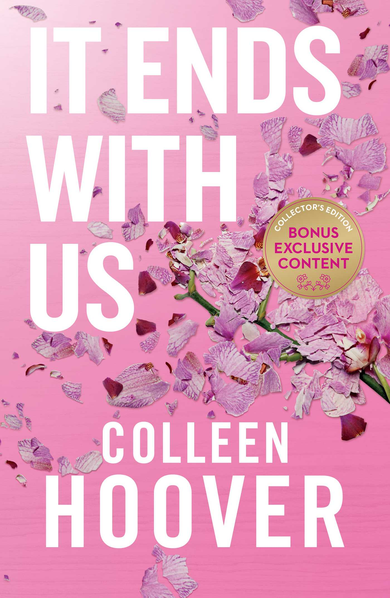
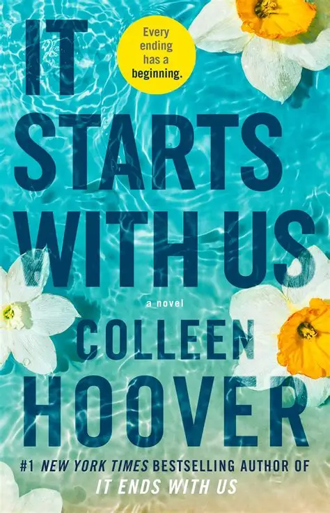
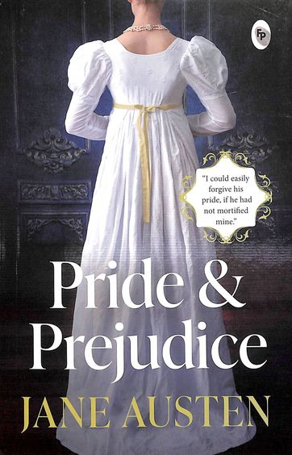
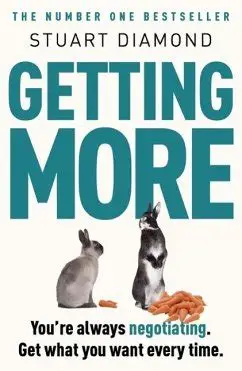

Books I've Read
Literary adventures that shaped my thinking and expanded my horizons

It Ends with Us
Core Story: Lily Bloom meets Ryle Kincaid, a charming neurosurgeon, and they fall in love. However, his volatile temper surfaces, forcing Lily to confront the painful cycle of domestic violence she witnessed in her childhood.
Key Themes: Domestic violence, emotional abuse, difficult choices, generational trauma, first love, and empowerment.

It Starts with Us
Core Story: This sequel picks up after Book 1's epilogue. Lily and ex-husband Ryle co-parent their daughter civilly. When Lily unexpectedly runs into Atlas Corrigan, she finally feels the timing is right for a second chance at love.
Key Themes: Second chances, co-parenting after divorce/abuse, healing, moving forward.

Pride & Prejudice
Core Story: Elizabeth Bennet navigates social pressures in early 19th-century England. The story focuses on her developing relationship with the wealthy, proud Fitzwilliam Darcy — their initial mutual dislike must be overcome through self-realization.
Key Themes: Pride and prejudice as blinding flaws, love vs. financial necessity, social class and reputation.
Sherlock Holmes Collection
Famous Novels: A Study in Scarlet (1887), The Sign of Four (1890), The Hound of the Baskervilles (1902), The Valley of Fear (1915).
Why It Matters: The legendary detective whose powers of deduction revolutionized mystery fiction.

Getting More
Currently ReadingCore Philosophy: Rejects the traditional "win/lose" bargaining model. Argues that every interaction is a negotiation, and success comes from valuing the other party above all else.
Key Method: The model focuses on understanding the other party's perceptions and emotions, shown to be four times more powerful than logic, power, or leverage.